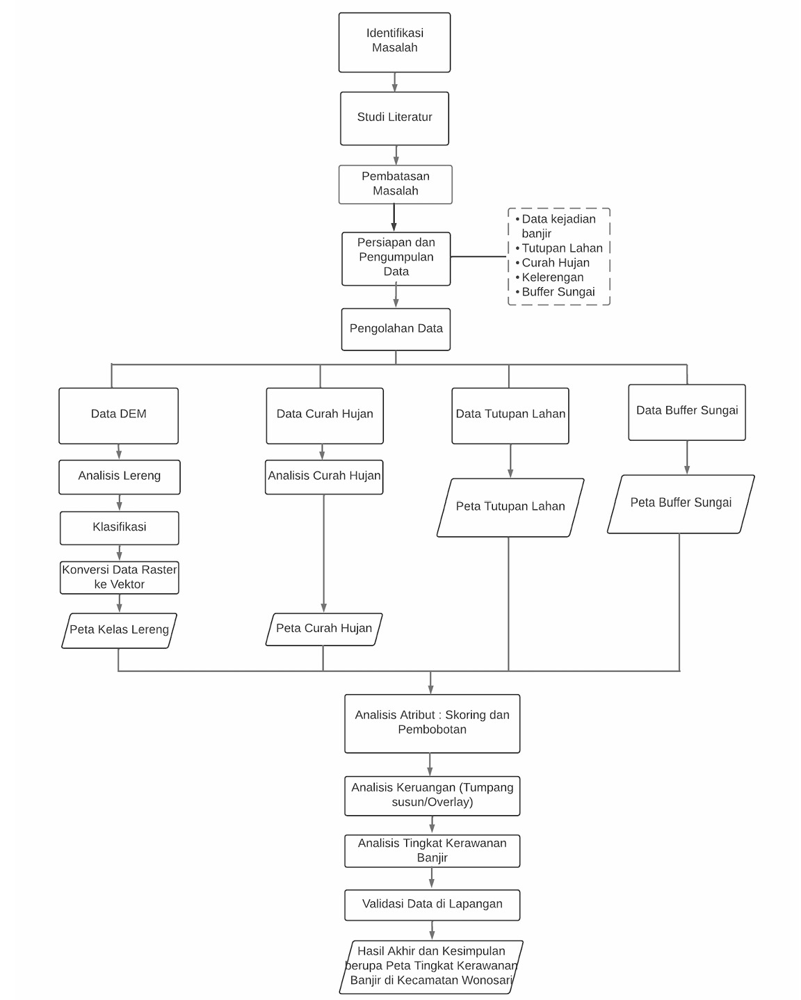
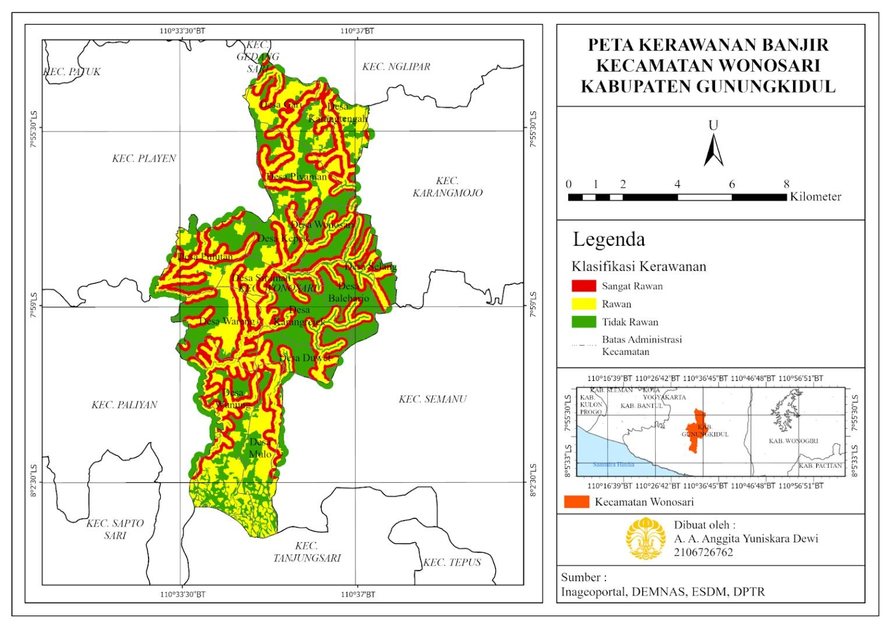

Pemetaan Wilayah Potensi Rawan Banjir Kecamatan Wonosari, Kabupaten Gunungkidul, Daerah Istimewa Yogyakarta
Latar belakang
Indonesia terletak di pertemuan tiga lempeng tektonik utama dunia, di antara dua benua dan dua samudra, sehingga rentan terhadap berbagai bencana. BNPB mengidentifikasi 13 jenis ancaman bencana di Indonesia, dan banjir menjadi salah satu yang paling dominan. Menurut Data Informasi Bencana Indonesia (DIBI)-BNPB, pada tahun 2022 terjadi 1.524 kejadian banjir, setara dengan 43,1% dari seluruh kejadian bencana nasional.
Banjir adalah tergenangnya suatu wilayah akibat air yang melebihi kapasitas pembuangan, dan menimbulkan kerugian fisik, sosial, maupun ekonomi. Penyebabnya dapat berasal dari faktor alami, seperti curah hujan, fisiografi, erosi dan sedimentasi, serta kapasitas sungai dan drainase. Faktor lain berasal dari aktivitas manusia, seperti pembuangan sampah sembarangan, penggunaan lahan yang tidak tepat, permukiman di bantaran sungai, dan rusaknya hutan serta Daerah Aliran Sungai (DAS).
Salah satu upaya meminimalkan kerugian akibat banjir adalah mengidentifikasi kawasan rawan banjir melalui pemetaan, sehingga tingkat kerawanan suatu wilayah dapat tergambar dengan jelas. Penelitian terdahulu telah menggunakan metode seperti Topographic Wetness Index (TWI) dan AHP Pairwise Comparison dengan variabel yang mirip, yaitu curah hujan, kemiringan lereng, dan tutupan lahan. Penelitian ini menggunakan tema yang relevan, tetapi dengan metode pembobotan dan scoring, dengan variabel curah hujan, kelerengan, buffer sungai, dan penggunaan lahan.
Lokasi penelitian adalah Kecamatan Wonosari, Kabupaten Gunungkidul. Menurut data BPS, kecamatan ini mencatat sepuluh kejadian banjir sepanjang tahun 2018, menjadikannya kecamatan dengan kejadian banjir terbanyak di Kabupaten Gunungkidul. Oleh karena itu, penelitian ini ditujukan untuk memetakan wilayah rawan banjir dan pola distribusinya di Kecamatan Wonosari, sebagai dasar antisipasi dan mitigasi untuk meminimalkan dampak bagi manusia dan lingkungan di wilayah tersebut.
Data yang digunakan
| Data | Format Data | Jenis Data | Sumber |
|---|---|---|---|
| Dokumentasi dan Wawancara | Vektor dan Tabular | Primer | Survey Lapangan |
| Curah Hujan 2018 - 2022 | Raster | Sekunder | CHIRPS |
| Kelerengan (DEM) | Raster | Sekunder | SRTM |
| Tutupan Lahan | Raster | Sekunder | Landsat 8 |
| Buffer Sungai | Vektor | Sekunder | Inageoportal |
| Wilayah Administrasi | Vektor | Sekunder | BIG |
Metode
Penelitian ini menggunakan metode skoring dan pembobotan dengan analisis keruangan overlay yang dikerjakan pada ArcGIS Pro. Tingkat kerawanan banjir ditentukan dari empat parameter, yaitu curah hujan, buffer sungai, tutupan lahan, dan kelerengan. Data yang digunakan terdiri atas data sekunder, yang diolah melalui tahapan skoring dan overlay, serta data primer berupa dokumentasi dan wawancara yang diperoleh langsung saat survei lapangan.
Tahapan penelitian dimulai dari identifikasi masalah, studi literatur, pembatasan masalah, serta persiapan dan pengumpulan data. Setiap parameter kemudian diolah secara terpisah. Data DEM dianalisis menjadi peta kelas lereng melalui proses klasifikasi dan konversi raster ke vektor, sedangkan data curah hujan, tutupan lahan, dan buffer sungai diolah menjadi peta masing-masing. Seluruh peta tersebut selanjutnya digabungkan melalui analisis skoring dan pembobotan, overlay, dan analisis tingkat kerawanan banjir, lalu diakhiri dengan validasi lapangan sebelum menghasilkan peta tingkat kerawanan banjir di Kecamatan Wonosari.

Pada tahap skoring, setiap parameter diklasifikasikan menjadi lima kelas dan diberi skor 1 sampai 5, di mana skor yang lebih tinggi menunjukkan potensi banjir yang lebih besar. Skor tersebut kemudian dikalikan dengan bobot tiap parameter, yaitu 0,4 untuk curah hujan, 0,3 untuk buffer sungai, 0,2 untuk tutupan lahan, dan 0,1 untuk kelerengan. Curah hujan diberi bobot terbesar karena pengaruhnya yang langsung terhadap limpasan permukaan, sedangkan kelerengan diberi bobot terkecil. Bobot dan klasifikasi ini mengacu pada penelitian terdahulu.
Setelah seluruh parameter diberi skor, dilakukan overlay dengan teknik intersect untuk menyatukan layer-layer tersebut beserta tabel atributnya. Potensi banjir dihitung dengan rumus Kingma (1991), yaitu penjumlahan nilai kumulatif keempat parameter: Potensi Banjir = N(TL) + N(BS) + N(CH) + N(KL), dengan TL adalah tutupan lahan, BS buffer sungai, CH curah hujan, dan KL kelerengan. Hasil perhitungan lalu dikelompokkan menjadi tiga kelas, yaitu sangat rawan (nilai lebih dari 32), rawan (25 sampai 32), dan tidak rawan (kurang dari 25).
Tahap terakhir adalah validasi lapangan. Peta kerja yang dilengkapi grid dan titik sampel disusun pada ArcGIS untuk memandu survei selama tiga hari, sehingga peneliti dapat menentukan lokasi sampel dengan tepat. Hasil survei digunakan untuk mencocokkan prediksi kerawanan banjir dengan kondisi sebenarnya di lapangan.
Hasil
Hasil skoring, pembobotan, dan overlay mengklasifikasikan Kecamatan Wonosari (luas total 7.840 Ha) ke dalam tiga tingkat kerawanan banjir: tidak rawan, rawan, dan sangat rawan. Kawasan tidak rawan memiliki nilai kurang dari 25, kawasan rawan bernilai 25 sampai 32, dan kawasan sangat rawan bernilai lebih dari 32.
| Tingkat Kerawanan | Nilai | Luas (Ha) | Persentase (%) |
|---|---|---|---|
| Tidak Rawan | < 25 | 2.850 | 36,4 |
| Rawan | 25 – 32 | 2.894 | 36,9 |
| Sangat Rawan | > 32 | 2.096 | 26,7 |
| Total | – | 7.840 | 100 |
Ketiga kelas kerawanan memiliki proporsi yang hampir seimbang. Kawasan rawan (36,9%) dan tidak rawan (36,4%) memiliki luasan yang nyaris sama, sedangkan kawasan sangat rawan mencakup 26,7% dari total wilayah, atau sekitar 2.096 Ha.

Secara spasial, kawasan rawan dan sangat rawan cenderung berada di bagian barat, selatan, dan utara kecamatan, meliputi Desa Mulo, Wunung, Wareng, Siraman, Pulutan, Gari, Karangtengah, dan Piyaman. Sebaliknya, kawasan tidak rawan lebih banyak berada di bagian timur, yaitu Desa Wonosari, Baleharjo, Selang, Karangrejek, Kepek, dan Duwet. Desa Wunung memiliki luasan terbesar pada ketiga kelas, dengan kawasan sangat rawan seluas 260 Ha, rawan 424 Ha, dan tidak rawan 286 Ha. Kawasan sangat rawan menyebar secara acak, tetapi hampir selalu berdekatan dengan jalur sungai, sejalan dengan kejadian banjir di Wonosari yang umumnya disebabkan oleh meluapnya aliran sungai ketika kapasitasnya tidak mampu menampung debit air.
Pola sebaran tersebut dipengaruhi oleh kombinasi beberapa faktor. Curah hujan di Wonosari tergolong tinggi, yaitu sekitar 1.500 hingga 2.500 mm per tahun, sementara tutupan lahan berupa permukiman yang mencakup sekitar 30% wilayah kecamatan memiliki daya serap air yang rendah sehingga limpasan permukaan meningkat. Kondisi topografi yang relatif datar juga membuat air mudah tergenang, terutama di daerah yang dikelilingi permukaan lebih tinggi. Untuk menguji hasil pemetaan, dilakukan pengecekan di lapangan dan diperoleh tingkat kesesuaian sebesar 70,3% pada titik sampel. Lokasi yang sesuai umumnya berupa lahan terbuka dan permukiman yang dekat dengan aliran sungai dengan kelerengan yang cukup datar, sedangkan lokasi yang tidak sesuai umumnya berupa tegalan atau ladang yang jauh dari sungai dengan lereng lebih curam. Ketidaksesuaian ini dapat disebabkan oleh faktor lain yang belum dimasukkan, seperti sistem drainase dan sejarah banjir, serta skala peta yang kecil sehingga informasi tutupan lahan, buffer sungai, dan kelerengan tergeneralisasi.
Kesimpulan
Kecamatan Wonosari memiliki potensi rawan banjir yang signifikan, dengan kelas rawan sebagai yang terluas, yaitu 2.894 Ha atau sekitar 37% dari total wilayah. Kelas tidak rawan menyusul dengan luas 2.850 Ha (36,4%), dan kelas sangat rawan seluas 2.096 Ha (26,7%). Desa Wunung menjadi desa dengan luasan terbesar pada ketiga kelas, yaitu 260 Ha sangat rawan, 424 Ha rawan, dan 286 Ha tidak rawan. Potensi banjir ini dipengaruhi oleh curah hujan, tutupan lahan, kelerengan, dan buffer sungai: curah hujan tinggi dapat menimbulkan genangan bila drainase tidak memadai, lereng curam mempercepat aliran air, tutupan lahan yang kurang menyerap air meningkatkan limpasan, dan buffer sungai yang tidak memadai membatasi kemampuan menampung luapan air.
Pola persebaran kawasan rawan banjir bersifat acak, tetapi terkonsentrasi di daerah yang berdekatan dengan aliran sungai. Hal ini menunjukkan bahwa sungai berperan penting dalam menentukan zona rawan banjir, sehingga identifikasi wilayah di sekitar sungai dan langkah pencegahan yang sesuai perlu menjadi prioritas.
← View other projects